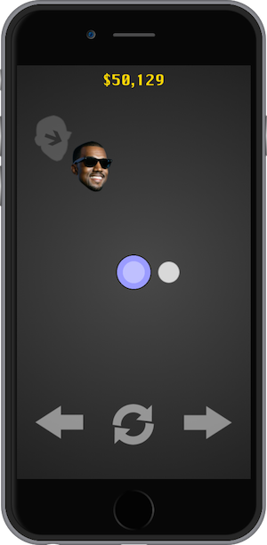

2014
Kanye Zone
KanyeZone is the iOS version of the extremely popular web game. The goal of the game is to keep Kanye out of his zone by blocking him with your ball. Each block gains you $50K closer to your high score. It's fun, addicting, and totally outrageous. Unfortunately, copyright issues has delayed the release of the game.


2013
Marko
Marko is a social networking, location based iPhone app that I created
with a small team during my junior year at Tufts University. The idea was to lock content to the location they were created. That way, users can access the content if they themselves are located at this location. It brings the expression, "You had to be there" to life. The app is currently available on the App Store.